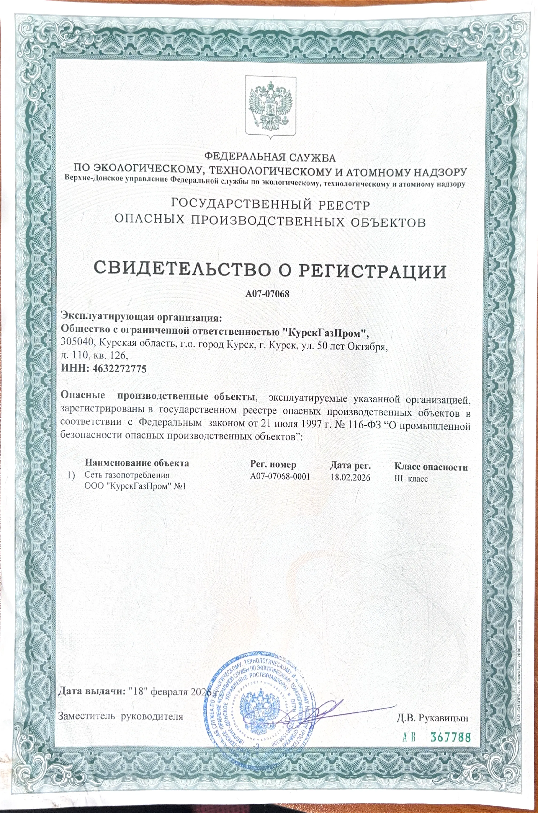

Ростехнадзор
Регистрация опасного производственного объекта
А07-07068
Сеть газопотребления ООО «КурскГазПром» № 1, регистрационный номер А07-07068-0001, III класс опасности.
Выдано: 18.02.2026
Действует до: Сведения о сроке действия не указаны